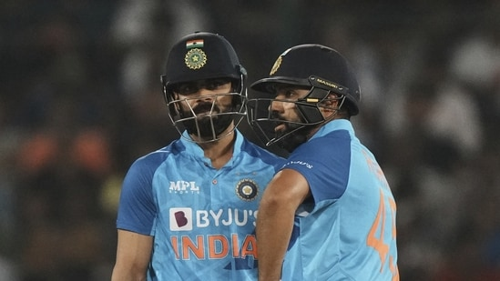

India vs South Africa Live Score Updates: The last India faced South Africa was right after the 2022 Indian Premier League and they had to rally from a 2-0 deficit to draw the series 2-2 despite playing at home. In the time since, however, while India have played three series and an Asia Cup, South Africa have played just two, one of which was a two-match series in Ireland. Their players have, however, been busy playing in T20 leagues in different countries and are far from short on game time.
